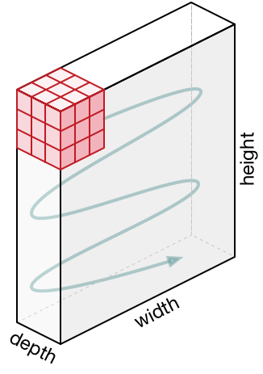

CSC413 Neural Networks and Deep Learning
Lecture 4
Lecture Overview
Last Week
- Automatic differentiation
- Distributed representations
- GloVe embeddings
This week
- Computer Vision
- Convolutional Layers
- Downsampling
- Training a ConvNet
- Examples and Applications
Computer Vision
Computer vision is hard
Computer vision is really hard
How can you “hard code” an algorithm that still recognizes that this is a cat?
Working with Small Images
In the week 3 tutorial, we worked with small, MNIST images, which are \(28 \times 28\) pixels, black and white.

How do our models work?
Notebook Demo - Logistic Regression Weights
Notebook Demo - MLP Weights (first layer)

Working with Large Images
- Suppose you have an image that is 200 pixels x 200 pixels
- There are 500 units in the first hidden layer
Q: How many parameters will there be in the first layer?
A: \(200 \times 200 \times 500 + 500 =\) over 20 million!
Working with Large Images II
Q: Why might using a fully connected layer be problematic?
- computing predictions (forward pass) will take a long time
- large number of weights requires a lot of training data to avoid overfitting
- small shift in image can result in large change in prediction
Convolutional Layers
Biological Influence
There is evidence that biological neurons in the visual cortex have locally-connected connections
See Hubel and Wiesel Cat Experiment (Note: there is an anesthetised cat in the video that some may find disturbing).
Convolutional Neural Network
- Locally-connected layers: compute local features based on small regions of the image
- Examples of features:
- a horizontal edge in an area
- a vertical edge in an area
- a blob (no edges) in the area
- a circular shape in the area
- Examples of features:
- Weight-sharing: detect the same local features across the entire image
Locally Connected Layers
Each hidden unit connects to a small region of the input (in this case a \(3 \times 3\) region)
Locally Connected Layers
Locally Connected Layers
Hidden unit geometry has a 2D geometry consistent with the input.
Locally Connected Layers
Locally Connected Layers
Locally Connected Layers
Locally Connected Layers
Locally Connected Layers
Q: Which region of the input is this hidden unit connected to?
Locally Connected Layers
Summary
Fully-connected layers:
Locally connected layers:
Weight Sharing
Locally connected layers
Convolutional layers
Use the same weights across each region (each colour represents the same weight)
Convolution Computation
\[\begin{align*} 300 = & 100 \times 1 + 100 \times 2 + 100 \times 1 + \\ & 100 \times 0 + 100 \times 0 + 100 \times 0 + \\ & 100 \times (-1) + 0 \times (-2) + 0 \times (-1) \end{align*}\]
Convolution Computation II
\[\begin{align*} 300 = & 100 \times 1 + 100 \times 2 + 100 \times 1 + \\ & 100 \times 0 + 100 \times 0 + 100 \times 0 + \\ & 100 \times (-1) + 0 \times (-2) + 0 \times (-1) \end{align*}\]
- The kernel or filter (middle) contains the trainable weights
- In our example, the kernel size is \(3\times3\)
- The “convolved features” is another term for the output hidden activation
Convolution Computation
\[\begin{align*} 300 = &100 \times 1 + 100 \times 2 + 100 \times 1 + \\ &100 \times 0 + 100 \times 0 + 100 \times 0 + \\ &0 \times (-1) + 0 \times (-2) + 100 \times (-1) \end{align*}\]
Convolution Computation
Q: What is the value of the highlighted hidden activation?
Convolution Computation
\[\begin{align*} 100 = &100 \times 1 + 100 \times 2 + 100 \times 1 + \\ &100 \times 0 + 100 \times 0 + 100 \times 0 + \\ &0 \times (-1) + 100 \times (-2) + 100 \times (-1) \end{align*}\]
Convolution Computation
Weight Sharing
Each neuron on the higher layer is detecting the same feature, but in different locations on the lower layer
“Detecting” = output (activation) is high if feature is present “Feature” = something in a part of the image, like an edge or shape
Sobel Filter - Weights to Detect Horizontal Edges

Sobel Filter - Weights to Detect Vertical Edges

Weights to Detect Blobs
Q: What is the kernel size of this convolution?
Example:
Greyscale input image: \(7\times 7\)
Convolution kernel: \(3 \times 3\)
Q: How many hidden units are in the output of this convolution?
Q: How many trainable weights are there?
There are \(3 \times 3 + 1\) trainable weights (\(+ 1\) for the bias)
Convolutions in Practice
What if we have a coloured image?
What if we want to compute multiple features?
Convolution in RGB

The kernel becomes a 3-dimensional tensor!
In this example, the kernel has size 3 \(\times 3 \times 3\)
Convolutions: RGB Input
Colour input image: 3 \(\times 7 \times 7\)
Convolution kernel: 3 \(\times 3 \times 3\)
Questions:
- How many units are in the output of this convolution?
- How many trainable weights are there?
Terminology
Input image: \(3 \times 32 \times 32\)
Convolution kernel: 3 \(\times 3 \times 3\)
- The number 3 is the number of input channels or input feature maps
Detecting Multiple Features
Q: What if we want to detect many features of the input? (i.e. both horizontal edges and vertical edges, and maybe even other features?)
A: Have many convolutional filters!

Many Convolutional Filters
Input image: \(3 \times 7\times 7\)
Convolution kernel: \(3 \times 3 \times 3 \times\) 5
Q:
- How many units are in the output of this convolution?
- How many trainable weights are there?
More Terminology
Input image of size \(3 \times 32 \times 32\)
Convolution kernel of 3 \(\times 3 \times 3 \times\) 5
- The number 3 is the number of input channels or input feature maps
- The number 5 is the number of output channels or output feature maps
Example
Input features: \(5 \times 32 \times 32\)
Convolution kernel: \(5 \times 3 \times 3 \times 10\)
Questions:
- How many input channels are there?
- How many output channels are there?
- How many units are in the higher layer?
- How many trainable weights are there?
Downsampling
Consolidating Information
In a neural network with fully-connected layers, we reduced the number of units in each hidden layer
Q: Why?
- To be able to consolidate information, and remove out information not useful for the current task
Q: How can we consolidate information in a neural network with convolutional layers?
- max pooling, average pooling, strided convolutions
Max-Pooling
Idea: take the maximum value in each \(2 \times 2\) grid.

Max-Pooling Example
We can add a max-pooling layer after each convolutional layer
Average Pooling
- Average pooling (compute the average activation of a region)
- Max pooling generally works better
Strided Convolution
More recently people are doing away with pooling operations, using strided convolutions instead:

Shift the kernel by 2 (stride=2) when computing the next output feature.
Training a Conv Net
How do we train a conv net?
With backprop, of course!
Recall what we need to do. Backprop is a message passing procedure, where each layer knows how to pass messages backwards through the computation graph. Let’s determine the updates for convolution layers.
How do we train a conv net? II
- We assume we are given the loss derivatives \(\overline{y_{i,t}}\) with respect to the output units.
- We need to compute the cost derivatives with respect to the input units and with respect to the weights.
The only new feature is: how do we do backprop with tied weights?
Multivariate Chain Rule (inputs)
Consider the computation graph for the inputs:
Each input unit influences all the output units that have it within their receptive fields. Using the multivariate Chain Rule, we need to sum together the derivative terms for all these edges
Multivariate Chain Rule (weights)
Consider the computation graph for the weights:
Each of the weights affects all the output units for the corresponding input and output feature maps.
Backpropagation on conv layers
The formula for the convolution layer for 1-D signals:
\[ y_{i,t} = \sum_{j=1}^{J} \sum_{\tau = -R}^{R} w_{i,j,\tau} \, x_{j, t + \tau}. \]
We compute the derivatives, which requires summing over all spatial locations:
\[\begin{align*} \overline{w_{i,j,\tau}} &= \sum_{t} y_{i,t} \frac{\partial y_{i,t}}{\partial w_{i,j,\tau}} \\ &= \sum_{t} y_{i,t} x_{j, t + \tau} \end{align*}\]
Examples and Applications
Object recognition
Object recognition is the task of identifying which object category is present in an image.
It’s challenging because objects can differ widely in position, size, shape, appearance, etc., and we have to deal with occlusions, lighting changes, etc.
Why we care
- Direct applications to image search
- Closely related to object detection, the task of locating all instances of an object in an image
Datasets
- In order to train and evaluate a machine learning system, we need to collect a dataset. The design of the dataset can have major implications.
- Some questions to consider:
- Which categories to include?
- Where should the images come from?
- How many images to collect?
- How to normalize (preprocess) the images?
MNIST - Handwritten Digits Dataset
- Categories: 10 digit classes
- Source: Scans of handwritten zip codes from envelopes
- Size: 60,000 training images / 10,000 test images, Grayscale, 28 x 28 pixels
- Normalization: Centered within the image, scaled to a consistent size
ImageNet I
ImageNet II
Used for: The ImageNet Large Scale Visual Recognition Challenge (ILSVRC), an annual benchmark competition for object recognition algorithms
Design Decisions
- Categories: Taken from a lexical database called WordNet
- WordNet consists of “synsets”
- Almost 22,000 classes used
- The 1,000 most common chosen for the ILSVRC
- The categories are really specific, e.g., hundreds of kinds of dogs
ImageNet III
Size: 1.2 million full-sized images for the ILSVRC
Source: Results from image search engines, hand-labeled by Mechanical Turkers
- Labeling such specific categories was challenging; annotators had to be given the WordNet hierarchy, Wikipedia, etc.
Normalization: None, although the contestants are free to do preprocessing
ImageNet IV
ImageNet V
ImageNet Results
| Year | Model | Top-5 error |
|---|---|---|
| 2010 | Hand-designed descriptors + SVM | 28.2% |
| 2011 | Compressed Fisher Vectors + SVM | 25.8% |
| 2012 | AlexNet | 16.4% |
| 2013 | a variant of AlexNet | 11.7% |
| 2014 | GoogLeNet | 6.6% |
| 2015 | deep residual nets | 4.5% |
What features do CNN’s detect?

Size of a convnet
- Ways to measure the size of a network:
- Number of units. The activations need to be stored in memory during training.
- Number of weights. The weights need to be stored in memory / number of parameters determines overfitting.
- Number of connections. There are approximately 3 add-multiply operations per connection (1 for the forward pass, 2 for the backward pass).
- Fully connected layer with \(M\) inputs and \(N\) outputs has \(MN\) connections / weights.
Size of a convnet II
Size of a convnet III
LeNet Atchitecture
LeNet Architecture II

- Input: 32x32 pixel, greyscale image
- First convolution has 6 output features (5x5 convolution?)
- First subsampling is probably a max-pooling operation
- Second convolution has 16 output features (5x5 convolution?)
- …
- Some number of fully-connected layers at the end
ResNet Architecture

ResNet Architecture II
- Suppose we add another layer. How can we ensure that the new set of represented functions contains the old set, before the layer was added?
- Why do we need this? We’d like to get larger (nested) sets of functions as we add more layers and not just different (non-nested) sets.
ResNet Blocks
- Side effect of adding identity \(f(x) = x + g(x)\): better gradient propagation
- See https://d2l.ai/chapter_convolutional-modern/resnet.html
DenseNet Blocks

Same idea as ResNet blocks, but instead of addition \(f(x) = x + g(x)\) they use concatenation \(f(x) = [x, g(x)]\).
DenseNet Architecture

See https://d2l.ai/chapter_convolutional-modern/densenet.html
Wrap Up
Summary
- Computer Vision has been the main motivation for Conv Nets
- They draw inspiration from biological vision systems
- Key ideas are: local connectivity and weight sharing
- Conv Nets can be trained using backpropagation